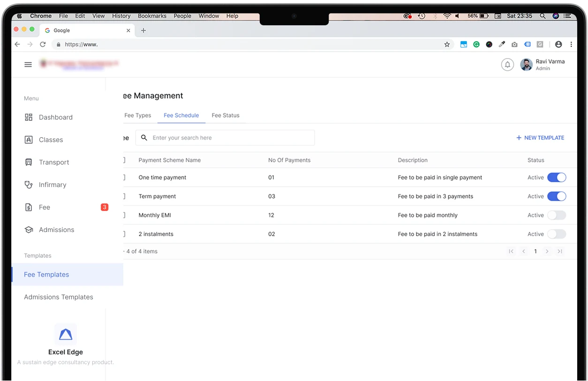

Problem
Templates multiplied with every payment option
What users faced
Users had to create more versions of each template as more payment types and concessions were needed.


By reducing the fee templates a single classroom needed from an average of 9 to 1.
The fee module needed an average of 9 fee templates for a single classroom, which made creating, editing and applying fees to classes and students an overwhelming task.
The existing design applied fees and concessions to a class, and reached students only through their class, so every payment option needed its own template.
Users had to create more versions of each template as more payment types and concessions were needed.
Users managed separate copies of the same template for every class that shared a fee structure.
Whenever a key piece of fee data changed, users had to edit and update every copy that used it.
A single template now holds every fee, payment option and concession for a fee structure, and applies to students directly, not through their class.
A single template now does the work of 9, so fees are faster to set up and always stay consistent.
Less time spent creating, editing and applying fees.
A classroom needs a single fee template, not one per payment option.
Fee data is updated in one template, not in every copy.
With no duplicates, no template is ever left out of date.